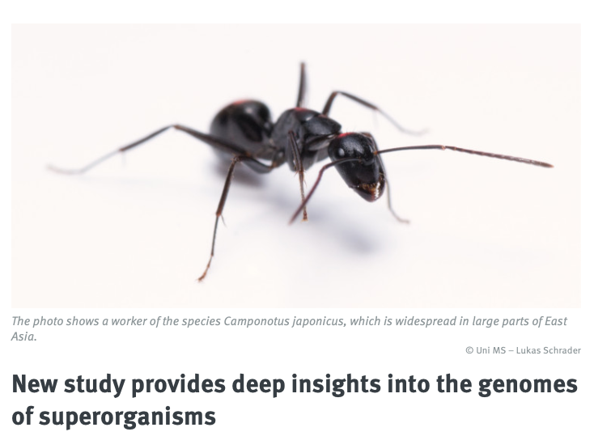
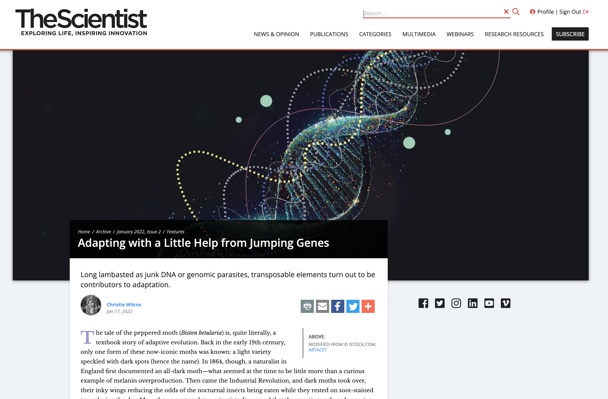
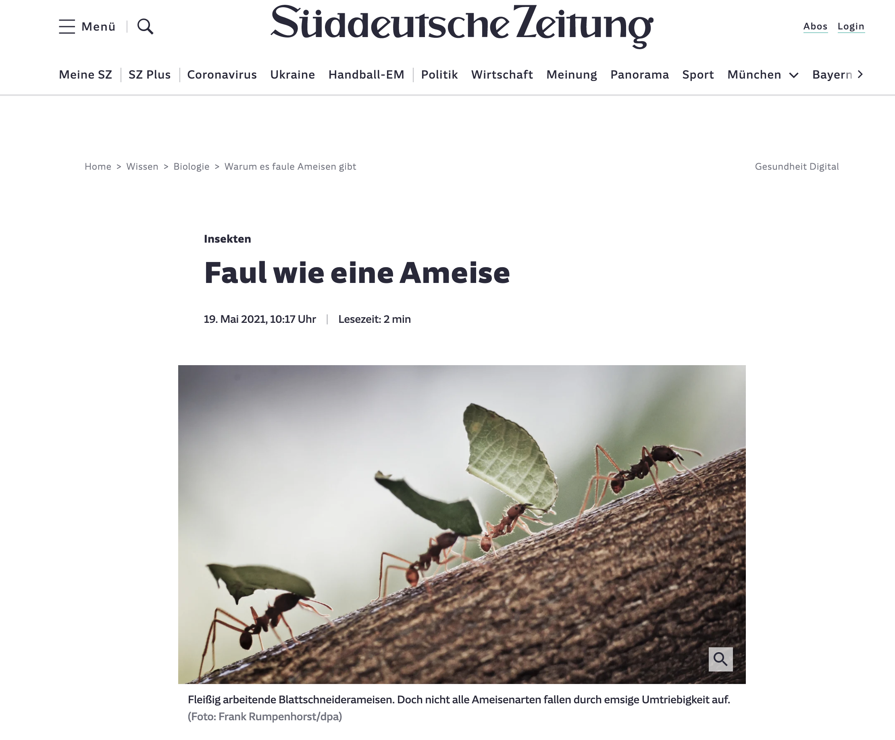
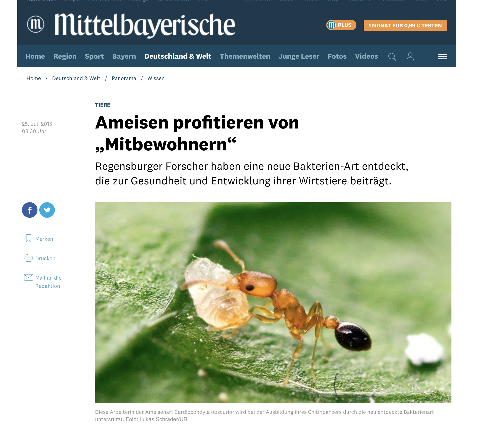
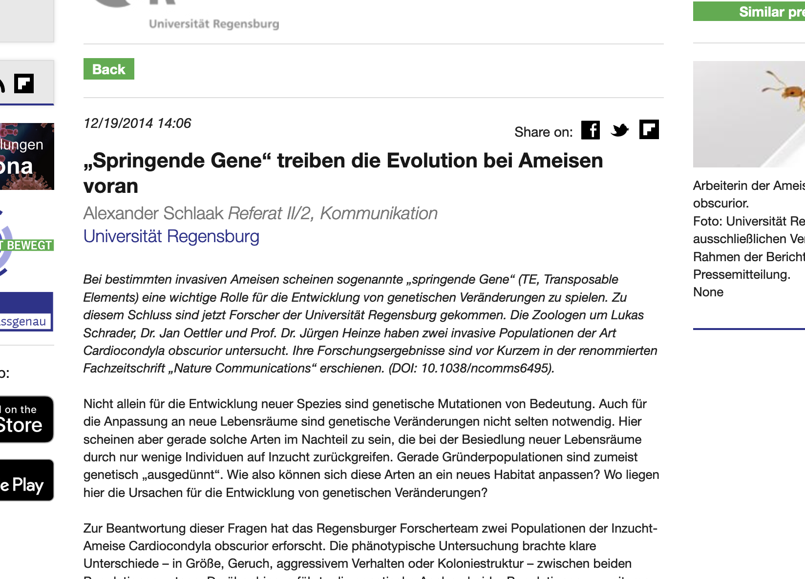

Press releases from the University
of Münster, the Chinese
Academy of Sciences and the Copenhagen
University highlight our Cell paper on genome
evolution in ants.

This
beautiful article from 2022 features our
work on the impact of transposable elements in invasive
Cardiocondyla.

The title roughly translates to lazy
as an ant and the article from 2021 summarizes our findings on
genome erosion in socially parasitic species of Acromyrmex.

This
article published in 2015 in the Mittelbayerische Zeitung focuses on
our discovery of the ant endosymbiont
Westeberhardia, which is named after the great Mary-Jane
West-Eberhard.

This press release from 2014
highlights our characterization of TE
islands in the ant Cardiocondyla obscurior.
Copyright © 2021 Lukas Schrader